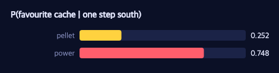

Efficient Inference: One Model, Many Backends
Ports agentmodels.org Ch 6 (efficient inference: dynamic programming, sampling, RL/gradient).
agentmodels.org treats the inference method as fixed scaffolding bolted around each
model: this chapter does dynamic programming, that one does MCMC. GenMLX takes the
opposite stance, and it is the whole point of genmlx.agents. An agent is a
generative function. The machinery you use to read a posterior off that function —
exact enumeration, importance sampling, Metropolis-Hastings, gradient ascent — is a
pluggable seam, orthogonal to the agent itself. Swap the backend and the answer must
not change. This is the inference analogue of GenMLX’s compilation creed: the agent
GF is ground truth; every backend is just a different way of reading it.
We will hold one Pac-Man inverse-planning problem fixed and solve it four ways. Watch
Pac-Man take a few steps in the maze; which cache does he value? The glyphs and the
−1 step cost are on the shared legend. We place three caches — call
them :a, :b, :c — at distinct corners. Pac-Man starts in the centre and we see
him move left, left, up. Two leftward steps are ambiguous between the two left-hand
caches; only the final upward step tilts the evidence toward the upper one. So the
posterior should sharpen in two stages, and it should land non-degenerate — :a
favoured, but :b keeping real probability mass. That non-degeneracy matters: it
forces the four backends to genuinely agree on a distribution, not just on an argmax.
(6a) Forward planning, two backends that agree
Even forward planning has a backend swap. Each candidate agent solves its plan by
tensor value iteration, exposing both a Q-table :Q (dynamic programming) and a
faithful recursive expected-utility function :expected-utility. They compute the
same quantity — Q[s,a] is exactly EU(s,a) at the same horizon — by structurally
different routes. The example checks this first:
(defn check-6a-vi-eq-recursive []
(println "\n-- (6a) Efficient exact: value iteration :Q == recursive expected-utility --")
(let [ag (goal-agents :a)
Q (:Q ag)
eu (:expected-utility ag)
;; compare over the non-terminal observed states (and both actions there)
max-diff (reduce max 0
(for [s obs-states a [0 1 2 3]]
(Math/abs (- (mx/item (mx/idx (mx/idx Q s) a)) (eu s a)))))]
(chk/check-true "value iteration Q[s,a] == recursive EU(s,a) to 1e-3"
(< max-diff 1e-3))))
Value iteration is the memoized, vectorized form of the recursive Bellman expectation;
the recursion is the textbook definition. They are the same equation. The test asserts
the maximum disagreement over every observed (s,a) pair is below 1e-3 — DP and
recursion agree to the float32 floor. This is the simplest instance of the chapter’s
thesis: the planner’s backend is itself a swappable detail.
(6b) Inverse planning, three backends that agree
Now invert. We write a single joint generative function whose latent :goal is a
categorical index over the caches, with a uniform prior. For each step Pac-Man took,
the model traces a softmax-action site over the chosen agent’s Q-row. The action
likelihood is the agent’s own policy — there is no bespoke likelihood function to
write and no chance of the forward and inverse models drifting apart:
(defn goal-inference-model
[]
(let [box (h/uniform-draw goals)
rows (into {} (for [g goals]
[g (mapv #(mx/idx (:Q (goal-agents g)) %) obs-states)]))]
(gen []
(let [gi (trace :goal (:dist box))
goal (h/draw-value box gi)
er (rows goal)]
(doseq [t (range (count obs-states))]
(trace (keyword (str "a" t))
(h/softmax-action ALPHA (nth er t))))
gi))))
With this one GF in hand, the three backends are nothing but different GFI calls
against it. The exact posterior enumerates the finite goal prior and uses p/assess
to score the full trajectory {:goal i, :a0 a0, …}, then normalizes — closed form, no
sampling, the ground truth. Importance sampling (is/importance-sampling) samples
the goal, constrains the observed actions, and groups the normalized particle weights
by sampled goal. Metropolis-Hastings (mcmc/mh) walks the discrete :goal latent,
accepting moves by the MH ratio, and reads the posterior off the chain’s empirical
frequencies:
(defn is-goal-posterior
[actions n key]
(let [model (goal-inference-model)
obs (h/action-choicemap actions)
{:keys [traces log-weights]} (is/importance-sampling {:samples n :key key} model [] obs)
{:keys [probs]} (iu/normalize-log-weights log-weights)
ess (iu/compute-ess log-weights)
post (reduce (fn [m [tr w]]
(let [i (int (mx/item (cm/get-choice (:choices tr) [:goal])))]
(update m (nth goals i) + w)))
(zipmap goals (repeat 0.0))
(map vector traces probs))]
{:posterior (normalize-map post) :ess ess}))
Three completely different control flows — a closed-form sum, a weighted particle
cloud, a random walk — converge to the same distribution. A single sampling run is an
estimate, never the posterior, so the example asserts agreement to tolerance with
deterministic seeds: importance sampling matches the exact posterior to within a total
variation of 0.03, and Metropolis-Hastings to within 0.05, both run at 5000
samples. The importance sampler keeps a healthy effective sample size — above 500, more
than 10% of N — confirming the weights have not collapsed onto one particle.
How do we know the exact posterior is itself correct, rather than the model and its
assessor being circularly self-consistent? An independent oracle. inv/posterior-sequence
accumulates per-cell action log-likelihoods with no joint GF at all — a genuinely
different code path through inverse.cljs — and reports the posterior after each
observed action:
(defn posterior-sharpening
[]
(let [prior (zipmap goals (repeat (/ 1.0 (count goals))))]
(inv/posterior-sequence goal-agents prior observations)))
The example asserts this independent sequence agrees with the p/assess-based exact
posterior to a total variation of 1e-4 — the closed form is cross-checked against
math that shares none of its implementation. The sequence also makes the two-stage
sharpening visible: a flat 1/3 prior, then mass moving toward the two left-hand caches
after the leftward steps, then concentrating on :a after the disambiguating up.
The bars below show exactly this kind of converged cache posterior — the distribution that enumeration, importance sampling, and Metropolis-Hastings all land on:

The reader should see one cache standing tallest while a rival keeps a real share of the mass — precisely the non-degenerate posterior that makes “the backends agree” a meaningful claim rather than a trivial one.
(6c) When the latent goes continuous, swap to gradients
Replace the discrete goal with a continuous utility vector over the same caches and
the natural backend swaps again — now to gradient ascent. The differentiable planner
in genmlx.agents.differentiable keeps the entire chain lazy and differentiable:
utilities flow into a reward tensor, through lazy value iteration, into a Q-table, a
log-softmax, and finally a gather of the observed action log-likelihoods. No mx/item
or mx/eval! appears inside the loss, because either would sever the backward pass:
(defn action-loglik-loss
[{:keys [S A] :as dmdp} theta-u tc log-alpha n-iters states-obs actions-obs]
(let [alpha (mx/exp log-alpha)
Q (diff-q dmdp theta-u tc alpha n-iters) ; [S,A]
logits (mx/multiply alpha Q) ; [S,A]
logp (mx/subtract logits (mx/expand-dims (mx/logsumexp logits [-1]) -1)) ; log_softmax over actions
flat (mx/reshape logp #js [(* S A)])
idx (mx/array (clj->js (mapv (fn [s a] (+ (* s A) a)) states-obs actions-obs)) mx/int32)
ll (mx/sum (mx/take-idx flat idx 0))] ; Σ_m log π(a_m|s_m)
(mx/negative ll)))
recover-params then runs Adam on this loss to recover the planted utilities. Because
utilities are identifiable only up to scale and a multiplicative interaction with the
rationality alpha, success is judged not by exact parameter recovery but by
likelihood equivalence: the recovered loss should be no worse than the loss at the
true planted utilities, and the recovered utility ordering should be correct. The
example plants [5.0 0.0 0.0] — cache :a valued, the others not — and asserts that
after 250 Adam steps the recovered :a utility is the largest of the three, the
recovered loss is within 1e-2 of the plant loss, and the loss actually decreased from
its initial value. Same forward agent, same observed trajectory; only the backend
changed, from a posterior over a discrete goal to a gradient through the planner.
The seam
Four backends — dynamic programming, exact enumeration, importance sampling,
Metropolis-Hastings, and gradient ascent — all read the same agent generative
function, and all agree: VI equals recursive expected-utility to 1e-3, and
enumeration, IS, and MH agree with each other and with an independent oracle to within
total variations of 1e-4 to 0.05. Nothing in the agent changed between backends.
Inference is the pluggable, orthogonal axis the thesis promised.
Next we let Pac-Man reason about something he cannot see: a ghost whose cell is hidden state, turning the maze into a POMDP.